| ZU | D | unrefracted zenith distance of the source (radians) |
|---|---|---|
| REFA | D | |
| REFB | D |
| ZR | D | refracted zenith distance (radians) |
|---|
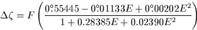
where 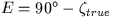 and F is a factor chosen to meet the
| error | ||
|---|---|---|
| 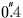 | ||
| 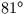 | 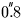 | |
| 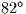 | 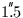 | |
| 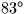 | 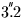 | |
| 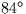 | 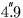 | |
| 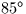 | 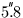 | |
| 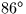 | 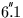 | |
| 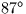 | 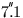 | |
| 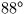 | ||
| 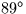 | 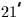 | |
| 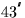 | ||
| 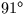 | 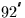 | < high-altitude |
| 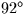 | 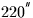 | < sites only |
SLALIB --- Positional Astronomy Library